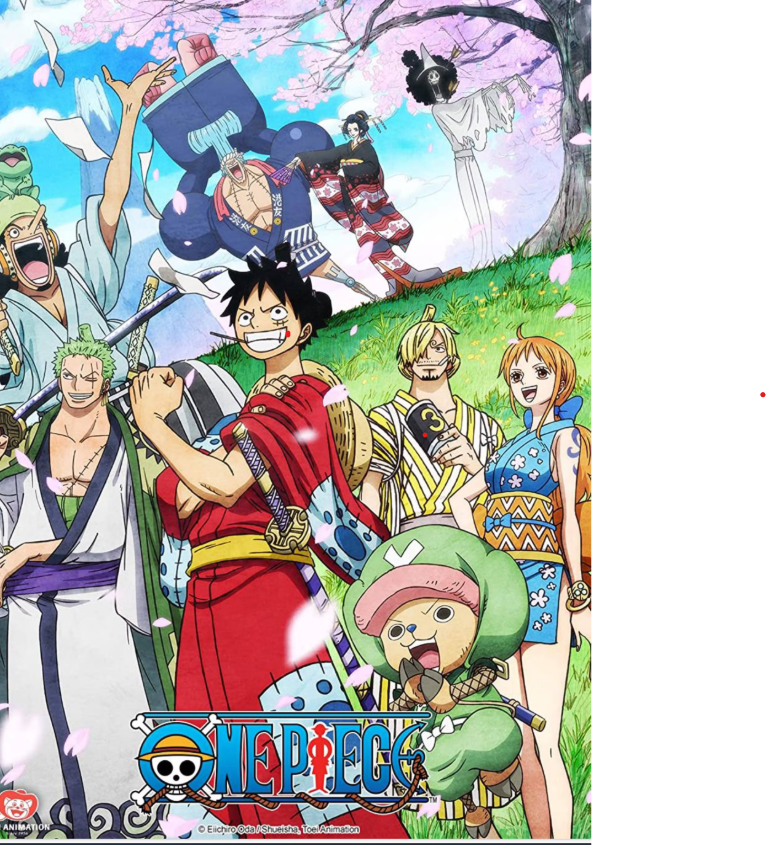

my favourite three shows are:
1.my most favourite show is onepiece
the show is very good with good animation
and intriguining plot twists

2.my second favourite is alice in borderland
it's any interesting show and the mc is genius
and at the end we see a god level plot twist
3.my third favourite show is salaar
super mass,nxt level twists